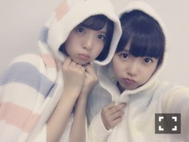
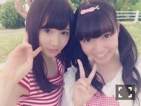

| 2015/07 14 Tue | ひめたん-0o0-その554 |
もふもふ(´,,•ω•,,｀)

お知らせたくさんありまーす！
まずは雑誌。
■「ブブカ」
ソログラビア
撮っていただきました＼(^o^)／
発売日近くなったらまた
お知らせしまーす！
ちょっと先になりそう～
いろんな衣装、いろんな表情の
いつもと違ったひめたんを
発見していただけるかなと。
もしかしたらみんなが知ってる
アイドル・ひめたんではないかもしれない♡
■「日経エンタテインメント」
発売中の最新号にて
万理華・井上・堀そして中元の4人で
お話しているのでぜひ。
この4人といえば......
トークのテーマなんとなくわかるかな？
乃木坂ちゃんの表紙が目印です☆
■「ヤングアニマル」
24日発売。
なんと表紙・巻頭・巻末グラビアを
アンダーメンバーがジャックしました！！
ありがたいことです( ´•̥ω•̥` )
撮影わちゃわちゃしてて楽しかったです！
なんか、今回のアンダーメンバー
雰囲気ガラッと変わったなって
これ見たら思っていただけるかも。
発売なったらオフショット載せるね～
■「UPDATE girls」
前回日記でお話してたやつです♡
らじらーの密着に来ていただきました
こちらは7/31創刊です！
乃木坂メンバー個人の活動に
スポットを当てていただいております！
私は「らじらー！サンデー」のこと。
生放送中のスタジオ風景や、
私が番組について語っているのはもちろん
オリラジさんへのインタビューなども
載ってます！
気になる(´,,•ω•,,｀)
何を語ってくださったのだろうか(´,,•ω•,,｀)
他にもいろんなメンバーに密着しています！
先週の「おに魂」ではゆったんのとこに
来てたね♡あんな感じ♡

続いてテレビのお話。
■8日 「鯉のはなシアター」
まあやとふたりで出演しました！鯉ばな！
広島出身のタレントとして
ゲストに呼んでいただけるなんて
こんな幸せなことはないです( ˇωˇ )
今回のテーマは
今や種類が豊富になったカープグッズの
起源となったものについてのお話。
地元にいる時に聞いてた知識もあったけど
はじめて知ることもたくさんあって
素敵なエピソードを教えてもらいました！
■11日 「乃木坂46SHOW！」
舞台「じょしらく」各チームの千秋楽に
密着していただきました～
本番直前・直後の顔なんて
なかなか見ることないから
新鮮だったんじゃないかなー？
みり愛レポーターありがとう(´｡•ω•｡`)
感想聞かせて～♪
■13日 「NOGIBINGO!5」
4が大好評だったということで
引き続き5がはじまります( ˆωˆ )
みなさんのおかげだよー♡
5でもいろんなことに挑戦するので
楽しみにしていてください！
#1出演してますよ～今夜～
他にもドラマ「初森ベマーズ」スタート
ドキュメンタリー映画公開
そして12thシングル発売ももう少し、と
グループとしての大きな動きが
たくさんあります！！
セブンイレブンさんにも
乃木坂ちゃんいるので
みなさんぜひ立ち寄ってみてね～♪

見習いカープ女子♡
ツインテールには名前があって
左がロサリオちゃん、
右がシアーホルツちゃんです！
特技であるひめたんびーむの飛距離は122m
これはカープの本拠地マツダスタジアムの
センターからホームまでの距離と同じです！
人生の目標は広島スタジアムの
32種類の座席を制覇すること！
ではここで4択クイズ～♪
......、
こんな感じでいいの？あってる？
らじらーリスナーならわかるはず。
ひめは只今カープ女子を目指して
お勉強中なのです！
試合観戦行きたいo(^▽^)o
広島の凱旋ライブの時に
みんなカープ帽とかかぶってたら
絶対かわいい......♡
日曜の夜はらじらーサンデー！
そういえば昨日のらじらーゲストは
目からビームでお馴染み
柴田阿弥さんだったということで！！
前に乃木坂46SHOW！でやったみたいに
いつからじらーでも
ビーム共演できたらいいなあ(<・ω・>)
次回のらじらーサンデー！
声優アーツには上坂すみれさんが
来てくださいます！！
さあ乃木坂からは一体
誰が来るんでしょーうか？？♡
おたよりもお待ちしてます～勘違い星人～

のぎ天がついに最終回を配信。
私はのぎ天がスタートした時から
たくさん出させてもらっていて
パリ、ゴルフ、キャンプ、生配信、台湾、
乃木團ライブなどこの番組を通して
いろんな経験をさせていただきました！
この番組を観て好きになったよーって
握手会で言ってくれる人が多くて
のぎ天は私たちメンバーと
ファンのみなさんを繋ぐ
大きな架け橋みたいな存在だったんだなって。
だから終わってしまうの
とっても寂しい( ´•̥ω•̥` )
今まで配信を楽しみにしてくれて
ありがとうございました。
みなさんはどの回が好きでしたか？

 全握で、
ひめたんのレーンにも
全握で、
ひめたんのレーンにも
並びたいです
４ヶ月前に１４歳になったばっかりの
女の子が握手しに来たら嬉しいですかー？
もちろん！
全握はライブもあるから1日中
乃木坂ちゃんを満喫と思う(＊´ω`＊)
とっても楽しい現場だからぜひ来てね！
ひめはひとりひとりと
ゆっくりお話するの好きだから
早く会いたいな～♡
甘くて米粒くらいのチョコレートと
スゴく甘くてゴルフボール位の
大きさのチョコレートだったら
どっちが食べたいと思う?
私ね甘過ぎるのはダメなんですよ～
なんなら最近ビター好きなんですよ～
ひめたんはスイカ全然
食べなそうだけど、食べますか？
食べなそう？夏女感がないのかしら？
実際あんまり食べないです( ´ ･ω･ ` )
種をプッてするの苦手。
ひめたんは沖縄といえば
何が浮かぶかなー？
夏！きれいな海！
真夏の沖縄いつか行ってみたいんだ～♪
サータアンダギー！ちんすこう！
今日はめっちゃお知らせ多かったなあ
じゃあ最後に
少しだけプライベートなお話を。
スラムダンク18巻まで読んだよ！
ハイペーーース！全国！
あとは近々
メンバーとお泊まりします♪
あああ楽しみすぎて今からうずうず......♡
そうだ、サイン会もありました
ありがとうございました～＊
なんとなくツインじゃない日でした！
らりんのブログがめっちゃひめたん♡♡
らりにはびーむ見えんらしい( °ω° )
いいもん！
平子さんには見えるんだもん！
(＊´・ω・＊)
コメント(468)
2015/07/14 00:00